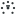

surround-workbench-symbolic.svg — GNOME panel preview

16 px · dark panel
24 px · dark panel
32 px · dark panel
64 px · dark panel
16 px · light panel
24 px · light panel
32 px · light panel
64 px · light panel
16 px · accent (teal)
24 px · accent
32 px · accent
64 px · accent